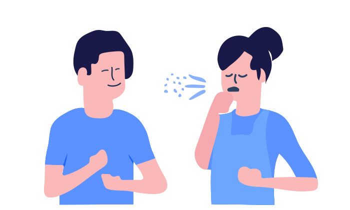

Propagation par contact avec des personnes infectées
Le virus peut atteindre la bouche, le nez ou les yeux, lors d'un contact direct ou étroit (moins d’un mètre de distance) avec une personne infectée.

Toucher ou entrer en contact avec des surfaces ou des objets infectés
Une personne peut contracter le COVID-19 en touchant une surface ou un objet contenant le virus, puis en touchant sa propre bouche, son nez ou éventuellement ses yeux.

Goutelettes expulsées par une personne infectée
Selon les données actuellement disponibles, le virus se propage principalement par des gouttelettes respiratoires entre personnes qui sont en contact étroit les unes avec les autres.